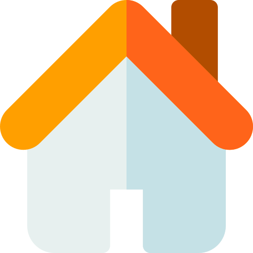

Red Sismica Ciudadana (Murcia)
Registrar Terremoto
Filtros
Fallas QAFI
Ortofoto PNOA
×
Registros Ciudadanos
Fuerza Percibida:
1 – 10
1
2
3
4
5
6
7
8
9
10
Rango de Fechas
mín: cargando…
-
máx: cargando…
Terremotos IGN
Rango de Magnitud:
0.0 - 6.0
0
1
2
3
4
5
6
Rango de Fechas
mín: cargando…
-
máx: cargando…
Terremotos IGN
Mag < 2.0
Mag 2.0 - 3.5
Mag 3.5 - 5.0
Mag > 5.0
Registros Ciudadanos
Fuerza 1 - 3
Fuerza 4 - 6
Fuerza 7 - 8
Fuerza 9 - 10
IGN:
Cargando…
Percibidos:
-
×
🔒
Acceso requerido
Debes iniciar sesión para poder registrar un terremoto.
Iniciar sesión
Crear cuenta